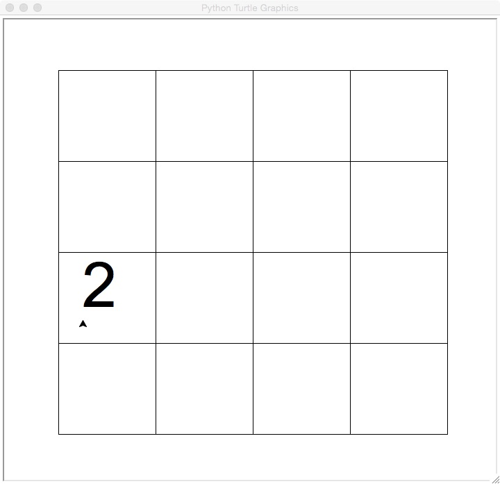
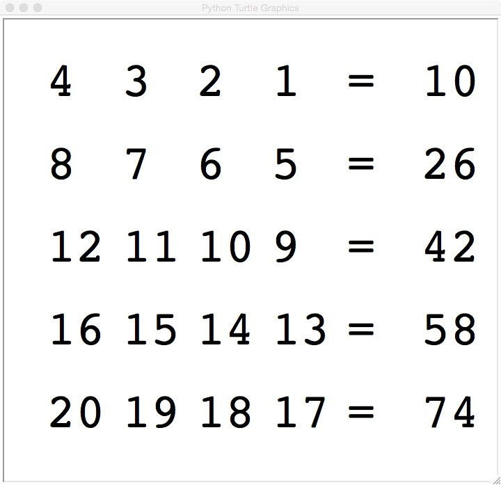
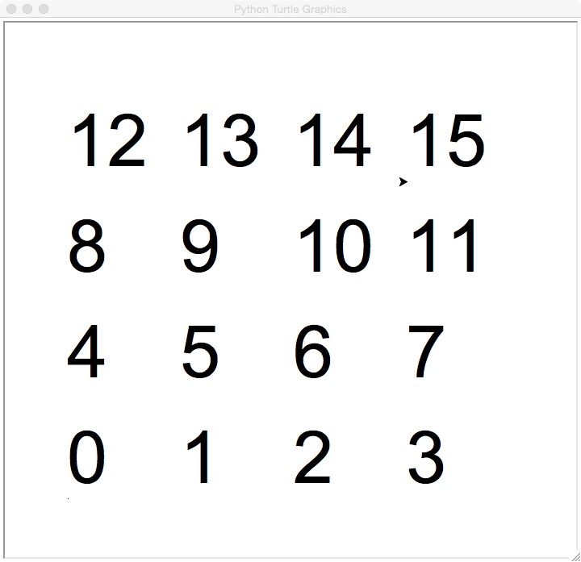
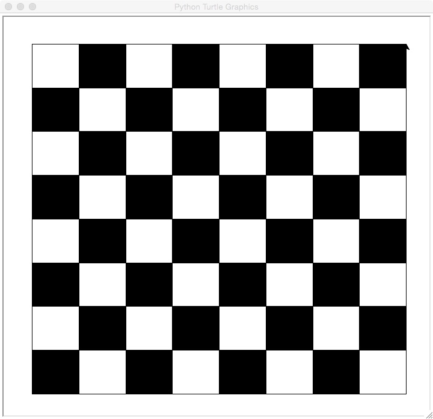
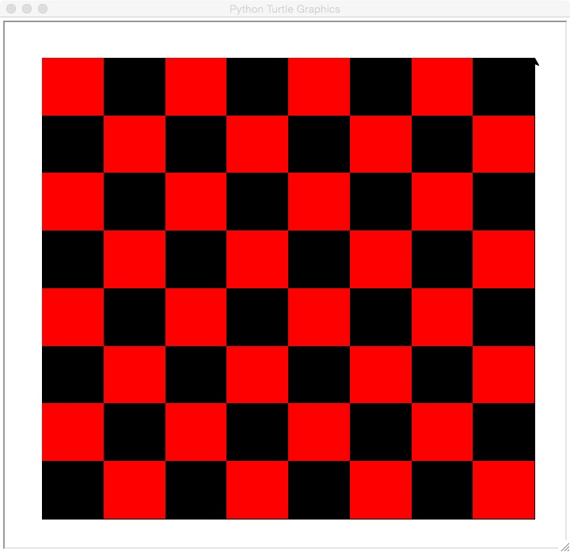
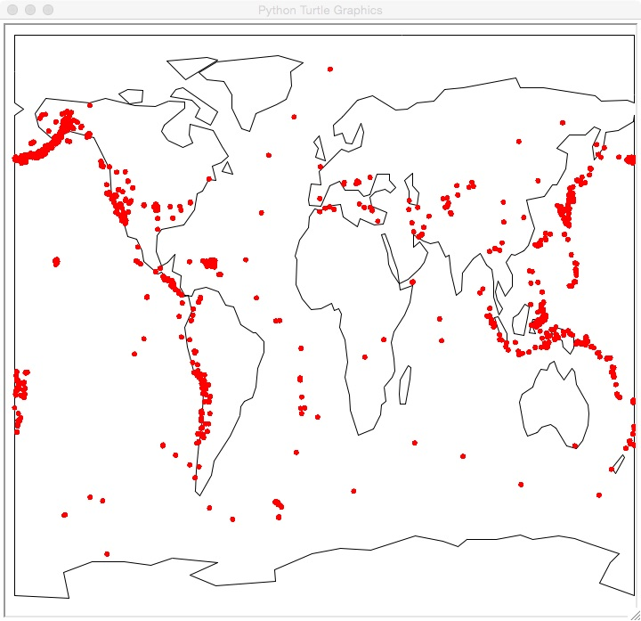

Submit the following programs via Blackboard:
- Due Date: 5 February Reading: Chapters 1 & 2
Write a program that prints your name to the screen 20 times. - Due Date: 9 February Reading: Chapters 1 & 2
Choose a (printable) character from the keyboard. Write a program that prints an opening statement and then asks the user for a number and prints your character that many times.For example:
The fault is in our stars... Please enter a number: 2 * *
Another sample run:
The fault is in our stars... Please enter a number: 5 * * * * *
Note: your program should have a statement you like (different from the sample and unique to you, so that the cheat-checking program does not flag it as someone's work) and print a character you choose (again, different from the character chosen above).
- Due Date: 10 February Reading: Chapter 2
Write a program that implements the pseudocode ("informal high-level description of the operating principle of a computer program or other algorithm") below:1. Ask the user for the size of their apartment in square meters (size) 2. Convert the size to square feet using the formula: convertedSize = size * 10.764 3. Print out the converted size.
- Due Date: 11 February Reading: Chapter 2
Write a program that asks the user for the diameter of a circular table and prints out the circumference. For example, if the user enters 10, your program should print out 31.4159265359.
Hint: The circumference of a circle is Pi*d where d is the diameter of the circle. - Due Date: 13 February Reading: Chapter 3
Write a program that will print out a conversion table for dollars and another currency. The currency you should use is based on the first letter of your first name:
For example, if your first name is Eric, you would use Euros. From the table above, we have that one dollar is worth 0.77 euros. You should begin the program by printing out your name. On each line, your program should write the number of dollars and the corresponding number of your currency. For example:If your name begins with... Use the currency: $1 is worth: A Afghan Afghani (AFN) 51.08 B Bangladeshi Taka (BDT) 80.58 C Costa Rican Colon (CRC) 499.38 D Danish Krone (DKK) 5.67 E Euro (EUR) 0.77 F Falkland Island Pound (FKP) 0.62 G Guatemalan Quetzal (GTQ) 0.13 H Hungarian Forint (HUF) 0.00456 I Indonesian Rupiah (IDR) 9639.99 J Japanese Yen (JPY) 83.85 K Kenyan Shilling (KES) 0.0116 L Lebanese Pound (LPP) 0.000664 M Moroccan Dirham (MAD) 0.118 N Nepalese Rupee (NPR) 0.0115 O Omani Rial (OMR) 0.384 P Polish Zloty 3.11 Q Qatari Riyal (QAR) 0.275 R Russian Ruble (RUB) 30.80 S Somali Shilling (SOS) 0.000619 T Thai Baht (THB) 30.59 U Ukrainian Hryvna (UAH) 8.10 V Venezuelan Bolivar (VEH) 4.30 W Samoan Tala (WST) 2.27 X East Caribbean Dollar (XCD) 2.70 Y Yemeni Rial (YER) 0.00477 Z Zimbabwean Dollar (ZWD) 361.90 Eric's converting program Dollars: Euros: 1 0.77 2 1.53 3 2.3 4 3.07 5 3.84
Your program should print the information for 1, 2, ..., 5 dollars. You do not need to worry about formatting (we will talk about that more in Chapter 5), but you do need to calculate all 5 entries.
Hint: modify the second program from the Lab 2.
- Due Date: 18 February Reading: Chapter 3
Write a program that implements the pseudocode below:1. Ask the user for the number of days until finals. 2. Print out the weeks until finals (weeks = days // 7) 3. Print out the leftover days (leftover = days % 7)
- Due Date: 19 February Reading: Chapter 3
Write a program that asks the user for time in days and prints the number of years and days (assume that there are 365 days in a year). For example, if the user entered, 1000, your program would output, 2 years 270 days. Note that you should use "years" and "days" for all inputs (even in the cases where it is grammatically incorrect). - Due Date: 20 February Reading: Chapter 3
Write a program that asks the user for 10 numbers and prints out the total.Here is a sample run of the program:
Please enter a number: 5 Please enter a number: 2015 Please enter a number: -100 Please enter a number: 3 Please enter a number: -999 Please enter a number: 8 Please enter a number: 67 Please enter a number: 19 Please enter a number: 17 Please enter a number: -1234 The total is -199
- Due Date: 23 February Reading: Chapter 3
Write a program that asks the user for 15 letters, accumulates them into a single string variable, and prints the string.Here is a sample run of the program:
Please enter a letter: I Please enter a letter: l Please enter a letter: o Please enter a letter: v Please enter a letter: e Please enter a letter: P Please enter a letter: y Please enter a letter: t Please enter a letter: h Please enter a letter: o Please enter a letter: n Please enter a letter: ! Please enter a letter: ! Please enter a letter: ! Please enter a letter: ! The string is: IlovePython!!!!
Hint: As for running totals where we initialize the variable to 0, for variables that "accumulate" strings, we initialize the variable to the empty string (""). Here's a summary of the basic approach for the accummulating design pattern, broken down by the type of the accummulator variable:Running sums: Running products: Accumulating Strings: Accumulating Lists: Initialization: sum = 0 prod = 1 s = "" To be explained
after Chapter 5...Update Action: for ...
sum = sum + newValuefor ...
prod = prod * newValuefor ...
s = s + newValue
- Due Date: 24 February Reading: Chapter 3
Modify the book's factorial program to calculate the double factorial. The double factorial is similar to the factorial, except you multiply every other number. For example, 5!! = 5 * 3 * 1 and 8!! = 8 * 6 * 4 * 2. Formally, n!! = n*(n-2)*(n-4)*...*(1).
Hint: you only need to change the range statement.
- Due Date: 25 February Reading: Think CS Turtle Chapter
Implement the following piece of pseudocode as a complete program using turtle graphics:Repeat 45 times: Walk forward 100 steps Turn right 92 degreesYour output should look similar to:

Hint: See Lab 3.
Note: Choose a name for your file that is not turtle.py. When executing the "import turtle" statement, the computer first looks in the folder where the file is saved for the turtle module and then in the libraries (and other places on the path). So, it thinks the module is itself, causing all kinds of errors. To avoid this, name your program something like "myTurtle.py" or "program8.py". - Due Date: 26 February Reading: Think CS Turtle Chapter
Modify the bouncing ball example from Lab 3 so that the ball bounces a little bit more each time. At the end, each bounce should go off the top of the screen.
Hint: the only change needed is to the height of the ball. How can you make the height get larger as time increases? - Due Date: 2 March Reading: Think CS Turtle Chapter
Using turtle graphics, draw a grid:

You may use any combination of turtle commands, but your image should have 9 by 9 grid shown above.
Hint: Resize the drawing canvas to give coordinates that are easier to use (see Lab 4). - Due Date: 3 March Reading: Think CS Turtle Chapter
Use turtle graphics to write your name to the screen, surrounded by a box or polygon. You may write your name in "cursive" by moving the turtle, or may use the write() command to have it printed to the graphics screen.
Hint: See Lab 4 for an example of the write() method for turtles. - Due Date: 5 March Reading: Think CS Turtle Chapter
Write a program that draws a 4 x 4 grid and places a turtle at a location specified by the user (and writes the number '2'). When the user hits enter, move the turtle to the left side of the screen (but keep the same "height" as it moves and again writes the number '2'). To make things easier, assume that the coordinates range from 0 to 3 for both the x and y values.For example, if the user enters the following at the Python shell:
Please enter coordinates: 2,1 Please hit the enter key to continue:
We draw the turtle at 2,1 (for reasons that will become apparent later, we're representing our turtle by the number "2"):

After the user hits the enter key, we have:

Hint: break the problem down into pieces:- First, draw the grid.
- Then ask the user for the coorinates.
- Move the turtle to those coordinates.
- Write to the screen.
- Then ask the user to hit the enter key.
- Next, move the turtle to the left.
- Write to the screen.
Challenge (ungraded, just for fun): Can you make the turtle appear to move from its initial location to the the one on the far left (that is, make the original mark disappear when the user hits enter):

- Due Date: 9 March Reading: Chapter 5
Write a program that asks the user for a string and then prints it out in all upper case and then all lower case. Here is a sample run of the program:Please enter a string: Look behind, look here, look ahead You entered (shouting): LOOK BEHIND, LOOK HERE, LOOK AHEAD But better (whispering): look behind, look here, look ahead
- Due Date: 10 March Reading: Chapter 5
Modify the encode.py program from Lab 5 to use an offset entered by the user to encrypt the message. The program in the lab encrypts each character by shifting 1 place ahead in the alphabet. Your program should ask the user for the offset and encrypt their string by replacing each character by one that is offset places ahead in the alphabet.A sample of Caesar cipher disk (from en.wikipedia.org/wiki/Caesar_cipher) with an offset of 13 (that is, every letter in plain text goes to one 13 letters to its right):

- Due Date: 11 March Reading: Chapter 5
Implement the following piece of pseudocode as a complete program:1. Prompt the user to enter a string and call it s. 2. Let l be the length of s. 3. For i from 0 upto l-1: 4. print s[0:i] 5. For i from 0 upto l-1: 6. print s[i:l] 5. Print a closing statementHere is a sample run of the program:Enter string: a man a plan a canal panama a a a m a ma a man a man a man a a man a a man a p a man a pl a man a pla a man a plan a man a plan a man a plan a a man a plan a a man a plan a c a man a plan a ca a man a plan a can a man a plan a cana a man a plan a canal a man a plan a canal a man a plan a canal p a man a plan a canal pa a man a plan a canal pan a man a plan a canal pana a man a plan a canal panam a man a plan a canal panama man a plan a canal panama man a plan a canal panama an a plan a canal panama n a plan a canal panama a plan a canal panama a plan a canal panama plan a canal panama plan a canal panama lan a canal panama an a canal panama n a canal panama a canal panama a canal panama canal panama canal panama anal panama nal panama al panama l panama panama panama anama nama ama ma a Thank you for using my program!
- Due Date: 12 March Reading: Chapter 5
Write a program that prompts the user to enter 5 lines of text and then outputs the total number of characters that they entered.Here is a sample interaction:
Enter line: Sing me no song, read me no rhyme line character count is 33 Enter line: Don't waste my time, show me! line character count is 29 Enter line: Don't talk of June, don't talk of fall line character count is 38 Enter line: Don't talk at all! line character count is 18 Enter line: Show me! line character count is 8 The number of characters entered is: 126
- Due Date: 16 March Reading: Chapter 5
Write a program that prompts the user to enter a list of names. Each person's name is separated from the next by a semi-colon (`;') and the names are entered lastName, firstName. Your program should then print out the names, one per line, with the first names first followed by the last names. Here is a sample interaction:Please enter your list of names: Falcon, Claudio; Ford, Eric; Owen, Megan; Rogers, Josh; St. John, Katherine You entered: Claudio Falcon Eric Ford Megan Owen Josh Rogers Katherine St. John Thank you for using my name organizer!
Hint: Do this problem in parts: first, split the list by person (what should the delimiter be?). Then, split each of person's name into first and last name (what should the delimiter be here?).
- Due Date: 17 March Reading: Chapter 5
Write a program that asks the user for the name of a text file, and then prints to the screen each of the lines in the file in upper case letters.For example, if your text file contained:
Input: first, get the input Process: then do the calculations Output: and last, print the results !!!
Then a sample run of your program would look like:
Please enter your file name: myFile.txt Your file in upper case letters is: INPUT: FIRST, GET THE INPUT PROCESS: THEN DO THE CALCULATIONS OUTPUT: AND LAST, PRINT THE RESULTS !!!
Hint: see the note about accumulators after Problem #9, Problem #19 and Lab 6. - Due Date: 18 March Reading: Chapter 5
Write a program that asks the user for the name of a text file, and then prints to the screen the lengths of each of the lines.For example, if your text file contained:
Sing me no song, read me no rhyme Don't waste my time, show me! Don't talk of June, don't talk of fall Don't talk at all! Show me!
Then a sample run of your program would look like:
Enter file name: song.txt Line character count is 33 Line character count is 29 Line character count is 38 Line character count is 18 Line character count is 8
Hint: what kind of value are you accumulating? See Problem #19 and Lab 6. - Due Date: 19 March Reading: Chapter 5
Write a program that asks the user for the name of a text file, and then prints to the screen the first character in each line.For example, if your text file contained:
Input: first, get the input Process: then do the calculations Output: and last, print the results !!!
Then a sample run of your program would look like:
Please enter your file name: myFile.txt The first letters of the lines in your file are: I P O !
- Due Date: 20 March Reading: Chapter 5
Write a program that asks the user for the name of a file. You may assume that every line of the contains a single floating point number. Your program should print out the sum of the numbers in the file.For example, if your file contained:
8.0 -2.5 100.0 6.5
Then a sample run of your program would look like:
Please enter your file name: nums.txt The sum of your numbers is 112.0.
Hint: see Problem #8 and Lab 6. - Due Date: 23 March Reading: Chapter 5
Write a program that asks the user for the name of a file. You may assume that every line of the contains floating point numbers separated by commas. Your program should print out the sum of the numbers in the file.For example, if your file contained:
-2.5, 2.0 8.0 100.0, 3.0, 5.1, 3.6 6.5
Then a sample run of your program would look like:
Please enter your file name: nums.txt The sum of your numbers is 125.7.
Hint: first sum up a single line, and then extend to an entire file. See Lab 6.
- Due Date: 24 March Reading: Chapter 5
Write a program that asks the user for the name of file of addresses and a name of an output file. Your program should replace all occurrences of "NY" with "New York", all occurrences of "NJ" with "New Jersey", and all occurrences of "CT" with "Connecticut" and write the results to the output file. For example, if the input file contains:from wikipedia: NY-NJ-CT Tri-State Area The NY metropolitan area includes the most populous city in the United States (NY City); counties comprising Long Island and the Mid- and Lower Hudson Valley in the state of New York; the five largest cities in NJ and their vicinities; six of the seven largest cities in CT and their vicinities; and five counties in Northeast Pennsylvania.
Then the output file should be:from wikipedia: New York-New Jersey-Connecticut Tri-State Area The New York metropolitan area includes the most populous city in the United States (New York City); counties comprising Long Island and the Mid- and Lower Hudson Valley in the state of New York; the five largest cities in New Jersey and their vicinities; six of the seven largest cities in Connecticut and their vicinities; and five counties in Northeast Pennsylvania.
Hint: do each replacement one-by-one, that is, first get your program to replace all the "NY"s with "New York"s and then go on to the next states. - Due Date: 25 March Reading: Chapter 5
Write a program that asks the user for a file containing a program and a name for an output file. Your program should then write the program, with line numbers to the output file. For example, if the input file is:def main(): for i in range(10): print("I love python") print("Good bye!")Then the output file would be:1 def main(): 2 for i in range(10): 3 print("I love python") 4 print("Good bye!")Hint: to preserve the spacing, also write a TAB ('\t') for each line. - Due Date: 26 March Reading: Chapter 6
Lab 7 focuses on top-down design; that is, beginning with an outline for the main() and filling in the function definitions. Fill in the missing function definitions for this program:import turtle def main(): myWin = turtle.Screen() #The graphics window tristan = turtle.Turtle() #Tristan will be our turtle for this program drawStem(tristan) #Draw a green stem for i in range(20): drawPetal(tristan,"blue") #Draws a blue petal for our flower drawPetal(tristan,"purple") #Draws a purple petal for our flower myWin.exitonclick() #Close the window when clicked
That is, write the functions drawStem() and drawPetal(). Include all functions, including the main() above in the file you submit. Sample output of the program:

(Note: you can change the color that your turtle, using the function, color(). For example, if you turtle is called tess to change it's color in stringColor, write tess.color(stringColor).)
- Due Date: 30 March Reading: Chapter 6
Complete the following program, which reads in a file that has multiple grades, each separated by a comma, and prints out the computed average. That is, write the functions getGrades() and calculateAverage():def main(): grades = getGrades() #get the file name containing the grades #and return the contents of the file avg = calculateAverage(grades) #separate the grades into numbers and compute #the average print("The calculated average is:", avg) main()
Hint: You may assume that there is one grade per line of the file. See Lab 7. - Due Date: 31 March Reading: Chapter 6
The following program displays a grid of numbers and the totals of each row. Fill in the missing function definitions for this program. That is, write the functions sumRow() and display():def main(): wn = Screen() #The graphics window nums = [[4,3,2,1], #The numbers to be displayed to the screen [8,7,6,5], [12,11,10,9], [16,15,14,13], [20,19,18,17]] n = len(nums) #The number of rows m = len(nums[0]) #The number of columns (assumes all same length) wn.setworldcoordinates(-0.5,n-0.5,m+2,-1.0) for row in range(n): rowTotal = sumRow(nums[row]) #Returns the sum of inputted list for col in range(m): display(nums[row][col], col, row) #Displays entry at (col,row) display("=", col+1, row) #Displays "=" at (col+1,row) display(rowTotal, col+2, row) #Displays row total at (col+2,row) wn.exitonclick() #Closes the graphics window when mouse is clicked main()A sample run (with the values of nums above):

Hint: See Lab 7.
- Due Date: 1 April Reading: Chapter 6
Write a program that reads in sequences of numbers from a file and displays them in a grid on a graphics screen. For this first program, you can assume that there are 4 lines each with no more than 4 entries per line. The entries on each line are separated by commas.For example, if the file contains:
12,13,14,15 8,9,10,11 4,5,6,7 0,1,2,3
Your program should draw:

Hint: See Lab 4 for resizing the screen (win.setworldcoordinates(-0.5,3.5,4.5,-1.0)) and drawing a grid. Here is pseudocode for this program:1. Draw a 4 x 4 grid to the screen (see Lab 4 or Problem 8). 2. Let row = 0 3. For each line in the file: 4. Split the line into nums 5. For i in range(len(nums)): 6. Move to (i,row) 7. Write nums[i] to the graphics window 8. row = row + 1
- Due Date: 2 April Reading: Chapter 6
Write a function that takes as a parameter a list of strings and returns a list containing the lengths of each of the strings. That is, if the input parameter is ["apple pie", "brownies","chocolate","dulce de leche","eclairs"], your function should return [9, 8, 9, 14, 7]. The file you submit should include a main() function that demonstrates that your function works.Hint: This problem can be approached as an "accumulator", where we accumulate lists:
Running sums: Running products: Accumulating Strings: Accumulating Lists: Initialization: sum = 0 prod = 1 s = "" li = [] Update Action: for ...
sum = sum + newValuefor ...
prod = prod * newValuefor ...
s = s + newValuefor ...
li.append(newValue)
-
Due Date: 13 April Reading: Chapter 6
Write a function that takes as a parameter a list of strings and returns a list containing the each string capitalized as a title. That is, if the input parameter is ["apple pie", "brownies","chocolate","dulce de leche","eclairs"], your function should return ["Apple Pie", "Brownies","Chocolate","Dulce De Leche","Eclairs"]. The file you submit should include a main() function that demonstrates that your function works.Hint: See problem above.
- Due Date: 14 April Reading: Chapter 6
Write a function that takes as a parameter a list of numbers and returns a list containing each number squared. That is, if the input parameter is [3,-1,0,2,10], your function should return [9,1,0,4,100]. The file you submit should include a main() function that demonstrates that your function works. - Due Date: 15 April Reading: Chapter 6
Implement the following pseudocode to draw a checkered flag to the screen.
1. Ask the user for the size of the checkered flag (n). 2. Draw an n x n grid to the screen. 3. For i = 0,2,4,...,n*n-1: 4. row = i // n 5. offset = row % 2 6. col = (i % n) + offset 7. fillSquare(row,col,"black")
Here is a sample run of the program:

Hint: see Lab 8.Challenge (ungraded, just for fun): Can you make a checkerboard:

- Due Date: 16 April Reading: Chapter 7
The program turtleString.py takes a string as input and uses that string to control what the turtle draws on the screen (inspired by code.org's graph paper programming). Currently, the program processes the following commands:- 'F': moves the turtle forward
- 'L': turns the turtle 90 degrees to the left
- 'R': turns the turtle 90 degrees to the right
- '^': lifts the pen
- 'v': lowers the pen
Modify this program to allow the user also to specify with the following symbols:
- 'B': moves the turtle backwards
- 'r': change the pen color to red
- 'g': change the pen color to green
- 'b': change the pen color to blue
Submit your modified program (including a comment at the top of the program with your name).
- Due Date: 17 April Reading: Chapter 7
Write a function that takes number between 1 and 7 as a parameter and prints out the corresponding number as a string. For example, if the parameter is 1, your function should print out one. If the parameter is 2, your function should print out two, etc.In your file, you should include a main() that allows the user to enter a number and calls your function to demonstrate that it works.
- Due Date: 20 April Reading: Chapter 7
Write a function that takes as two parameters: the zone and the ticket type, and returns the Copenhagen Transit fare.- If the zone is 2 or smaller and the ticket type is "adult", the fare is 23.
- If the zone is 2 or smaller and the ticket type is "child", the fare is 11.5.
- If the zone is 3 and the ticket type is "adult", the fare is 34.5.
- If the zone is 3 or 4 and the ticket type is "child", the fare is 23.
- If the zone is 4 and the ticket type is "adult", the fare is 46.
- If the zone is greater than 4, return a negative number (since your calculator does not handle inputs that high).
You should include in the file a main() that calls your function several times to demonstrate that it works.
- Due Date: 21 April Reading: Chapter 7
Define a Python function named calculate_tax() which accepts one parameter, income, and returns the income tax. Income is taxed according to the following rule: the first $250,000 is taxed at 40% and any remaining income is taxed at 80%. For example, calculate_tax(100000) should return $100,000 * 0.40 = $40,000, while calculate_tax(300000) should return $250,000 * 0.40 + 50,000 * 0.80 = $140,000.In your .py file, you should include a main() that calls your function several times to demonstrate that it works.
- Due Date: 22 April Reading: Chapter 7
Write a function that takes a list of strings and returns the number of strings longer than 10 characters in the inputted list .You should include in the file a main() that calls your function several times to demonstrate that it works.
- Due Date: 23 April Reading: Chapter 8
The program lotsOfErrors.py has lots of errors. Fix the errors and sumbit the modified program.
Hint: see end of Lab 10. - Due Date: 24 April Reading: Chapter 8
Write a program that asks the user to enter a number between 0 and 1000, inclusive (that is, including the end points 0 and 1000). If they enter a number out of range, print a message that the number is out of range and prompt them again for a number between 0 and 1000, inclusive. When the user enters a number in range, print the number to the screen and end the program. - Due Date: 27 April Reading: Chapter 8
Write a program that asks the user to enter a string. If the user enters an empty string, your program should continue prompting the user for a new string until they enter a non-empty string. Your program should then print out the string entered. - Due Date: 29 April Reading: Chapter 8
Modify the tic-tac-toe program from Lab 9 to check that the user chooses an empty square. Your program should ask the user for coordinates of where to play. While their choice of square if filled, you should continue to ask them until they choose an empty square. When the choose an empty square, the program continues as before. - Due Date: 30 April Reading: Chapter 8
Modify the 2048 program from Lab 10 to check that the user chooses a direction each move. Your program should ask the user for coordinates of where to play. While their choice is not a legal move (i.e. 'L', 'l', 'R', 'r', 'U', 'u', 'D', or 'd'), you should continue to ask them until they choose an legal move. When they choose a legal move, the program continues as before.
- Due Date: 4 May Reading: Chapter 9
Write a program that will take earthquake data from the US Geological Survey and map it to the screen. The data files are spreadsheets stored in "comma separated values" (CSV) format. For example, here are the first couple of lines of the file of all earthquakes from the week of 13 March 2015:time,latitude,longitude,depth,mag,magType,nst,gap,dmin,rms,net,id,updated,place,type 2015-03-20T10:20:35.890Z,38.8221664,-122.7649994,2.48,0.92,md,15,52,0.009138,0.04,nc,nc72414375,2015-03-20T10:35:05.263Z,"3km W of Cobb, California",earthquake 2015-03-20T10:18:13.070Z,33.2073333,-116.6891667,8.65,0.6,ml,15,92,0.03606,0.12,ci,ci37343784,2015-03-20T10:22:09.236Z,"8km ESE of Lake Henshaw, California",earthquake 2015-03-20T10:15:09.000Z,62.242,-150.8769,58.2,1.5,ml,,,,0.51,ak,ak11532412,2015-03-20T10:26:23.671Z,"40km WSW of Talkeetna, Alaska",earthquake
The first line describes the columns and the remaining lines are the actual data about earthquakes. To map a quake, we need to know its location which is stored in the latitude and longitude columns. For example, if line is a line of the file, then the location of the earthquake is (x,y) where:cells = line.split(",") y = cells[1] x = cells[2]The file mapQuakes.py has some functions already written for you, including the main(). Fill in the missing functions to produce an image like:
Useful files and links:
- mapQuakes.py: this is the template for the program. Modify this file, by adding in the missing function definititons.
- oceansSimplified.json: the data file to produce the background map. It is a simplified map of the world with less 10% of features: in the simplification, it lost features (like Florida) but it is much, much faster to draw which is important given the speed of our (cute, but slow) turtles.
- dayAll_2015Mar18.csv: a small datafile to test your program. It consists of all earthquakes (of any magnitude) over a 24 hour period ending March 18, 2015.
- week4.5_2015Mar18.csv: a small datafile to test your program. It consists of all earthquakes of magnitude of 4.5 or greater over the week ending March 18, 2015.
- month4.5_2015Mar18.csv:
the data file used to create the image above. It consists of all earthquakes of magnitude of 2.5 or greater over the 30 days ending March 18, 2015.
Warning: it is large and will take a while to plot every quake. Use smaller files for testing. - The oceans data is from Natural Earth public domain maps, simplified using mapshaper.org. For more details on the simplifying process, see Mike Bostock's lovely overview.
- Earthquake data is from the United States Geological Survey (USGS) data feed (CSV format).
- The JavaScript Object Notation (JSON) is used in Lab 14. If you are interested in more details, see JSON.org and geoJSON.org.
- Due Date: 5 May Reading: Chapter 9
Implement the following piece of pseudocode:function oddEvenSort(list) { sorted = false; while(!sorted) { sorted = true; for(i = 1; i < list.length-1; i += 2) { if(list[i] > list[i+1]) { Swap list[i] and list[i+1] sorted = false; } } for(var i = 0; i < list.length-1; i += 2) { if(list[i] > list[i+1]) { Swap list[i] and list[i+1] sorted = false; } } } }(from http://en.wikipedia.org/wiki/Odd-even_sort)Include a main() function in your program that demonstrates that your function sorts a list of numbers.
Hint: see Lab 11 and animation at the wiki page. - Due Date: 7 May Reading: Chapter 9
Write a simulation of the rolling of 2 six-sided dice. Your program should have a function that oneRoll() that returns the sum of rolling your dice. You may assume that each of the six sides is equally likely to be rolled (that is, the dice are "fair"). Run your simulation 10,000 times and report the frequency that each sum occurred.A sample run of your program should look something like (but not identical due to the randomness of the simulation):
2 : 292 3 : 536 4 : 810 5 : 1100 6 : 1428 7 : 1631 8 : 1439 9 : 1100 10 : 825 11 : 543 12 : 296
- Due Date: 11 May Reading: Chapter 10
Modify the book's student GPA example (Python files available from the Chapter 10 folder on the book's website) to also print out the information for the most senior student (currently the program only prints out the student with the best GPA). That is, your program should print out the student with the best GPA (from before) and also the student who has completed the most hours.
Hint: see Lab 13. - Due Date: 12 May Reading: Chapter 10
Write a complete class that keeps tracks of information about train lines. Your class, TrainLine should contain instance variables for the name, length, dailyRidership and coverageArea, and should have:- a constructor method,
- a method, getLength(), that returns the train length a method, and
- a method, riderDensity() that calculates rider density ("dailyRidership/coverageArea")
def overallLength(subway):
Include a main() in your file that demostrates that your class and function work.